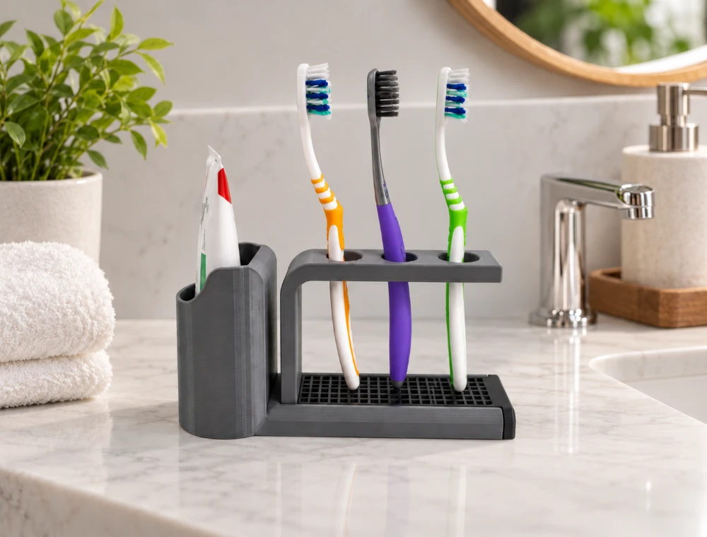

Ürünü seç
Renk, adet ve varsa kişiselleştirme isteğini bize ilet.

Görseli büyütmek için ana görsele tıkla.
EV & DÜZEN
Diş fırçaları ve diş macununu lavabo çevresinde düzenli tutmak için tasarlanan banyo standı. Üst bölümde 3 ayrı diş fırçası yuvası, yan bölümde ise diş macunu için özel hazne bulunur. Suya dayanıklı PETG malzemeden üretilen gövdesi, banyo ve lavabo çevresindeki neme karşı daha uygun bir yapı sunar. Tek parçada günlük bakım ürünlerini bir araya getirerek tezgâhtaki dağınıklığı azaltır. Diş fırçaları ve diş macunu ürüne dahil değildir.
Seçimin site üzerinde kaydedilmez; yalnızca WhatsApp mesajını hazırlamak için kullanılır.
Ürün suya dayanıklı PETG filament ile 3D baskı yöntemiyle üretilir. 3 diş fırçası ve 1 diş macunu için tasarlanmıştır. Diş fırçası ve diş macunu pakete dahil değildir. 3D baskı yüzeylerinde ince katman izleri görülebilir.
SİPARİŞ SÜRECİ
Renk, adet ve varsa kişiselleştirme isteğini bize ilet.
Üretim seçeneği ve teslim/kargo detaylarını sipariş öncesi netleştir.
Ürün atölyede 3D baskı ile hazırlanır ve kontrol edilir.
Kuşadası elden teslim veya uygun kargo seçeneğiyle gönderim.
SİPARİŞ ÖNCESİ
Mevcut filament seçenekleri ürüne göre değişir. Sipariş öncesinde uygun renkleri WhatsApp üzerinden birlikte netleştiriyoruz.
Süre; ürün, adet ve atölye yoğunluğuna göre değişebilir. Güncel üretim ve teslim bilgisini sipariş öncesinde paylaşıyoruz.
Evet. Katman dokusu 3D baskı üretim yönteminin doğal karakteridir. Ürünler doğrudan baskı kalitesini koruyacak şekilde hazırlanır.
BUNLAR DA İLGİNİ ÇEKEBİLİR